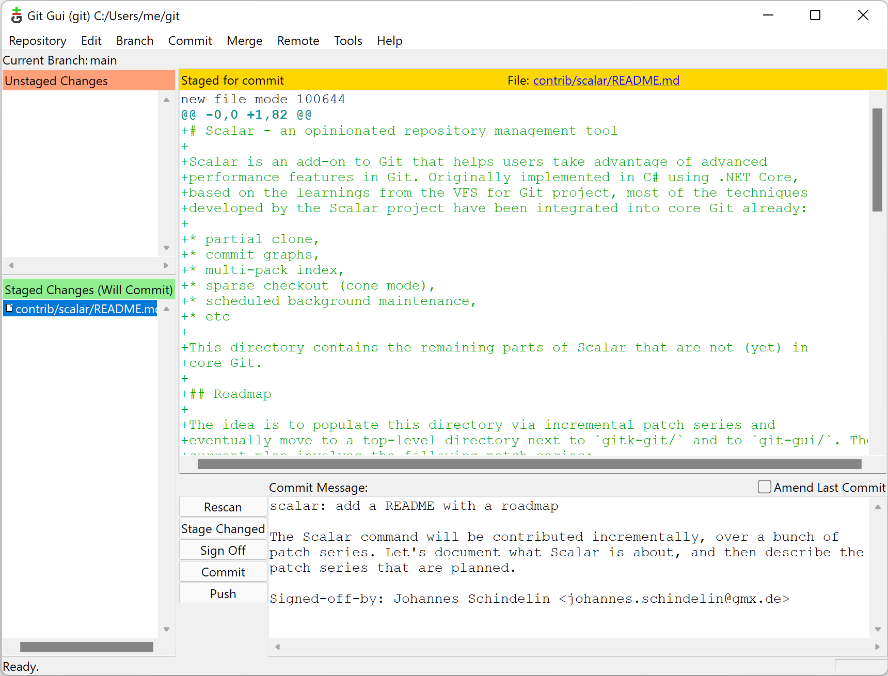

Windows Dev Env for Python¶
Windows tool recommendations and setup guide for Python development.
Table of Contents
Part 1: Discord¶
Discord is a messaging app that is especially good for groups. It is how we primarily gather via voice for classes. We also use the text chat to keep in touch and share links, and occasionally use the screen sharing for troubleshooting.

Part 2: Git¶
Git is a tool we use for keeping track of the changes to any code we write over time. This particular package, made for windows, also includes some tools that will make your terminal experience more similar to the one on Mac or Linux systems.
Install git for windows.

Part 2: Github¶
Github is a service for backing up and hosting your code and all of its history.
Sign up for an account on Github.com.

Part 3: Python¶
Install the Latest Python 3 Release of Python from Python Releases for Windows.
Be sure to check the box Add Python to PATH.

Warning
While Python is available in the Microsoft Store, the recommendation as of this writing is to install from python.org.
The Microsoft Store version has certain limitations, has had reliability issues in the past, and has some slight differences that may cause problems or confusion.
See also
Part 4: Visual Studio Code¶
Visual Studio code is a piece of software for writing code. It is the most popular editor of its time due in part to the fact that it is approachable, cross-platform, and works with any language. It also has collaboration features that we rely on.

Part 2.1: Install¶
Install the latest version of Visual Studio Code.
Part 2.2: Settings¶
Open the command palette with the keyboard shortcut Ctrl+Shift+P.
Type
settingsthen hit the down arrow until Preferences: Open Settings (JSON) is selected then hit Enter.Paste the following into the file then save (Ctrl+S).
{
"terminal.integrated.profiles.windows": {
"PowerShell": {
"source": "PowerShell",
"icon": "terminal-powershell"
},
"Command Prompt": {
"path": [
"${env:windir}\\Sysnative\\cmd.exe",
"${env:windir}\\System32\\cmd.exe"
],
"icon": "terminal-cmd"
},
"GitBash": {
"path": ["C:\\Program Files\\Git\\bin\\bash.exe"],
"source": "Git Bash",
"icon": "terminal-bash"
}
},
"terminal.integrated.defaultProfile.windows": "GitBash"
}